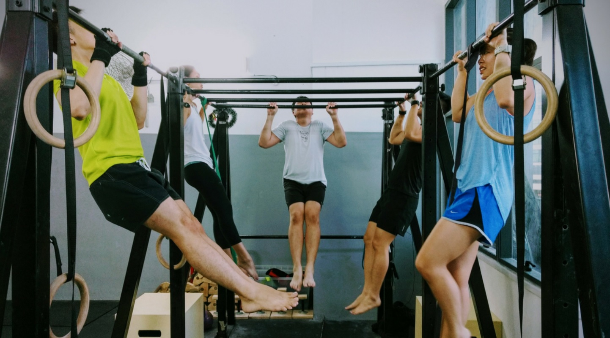
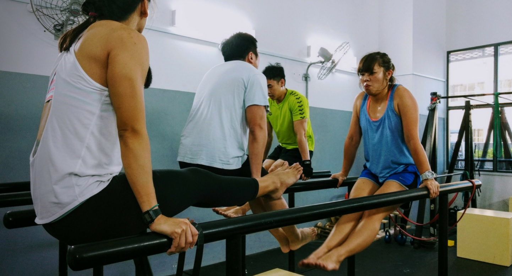
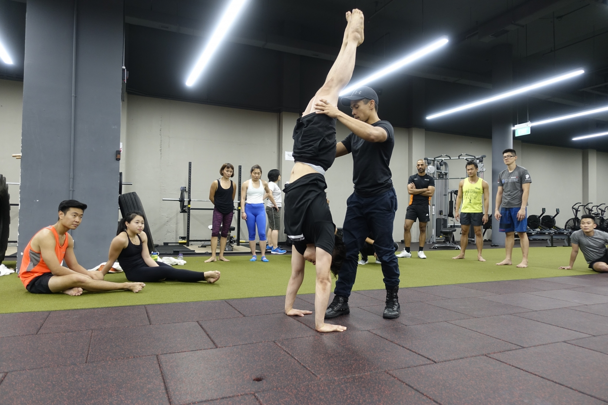
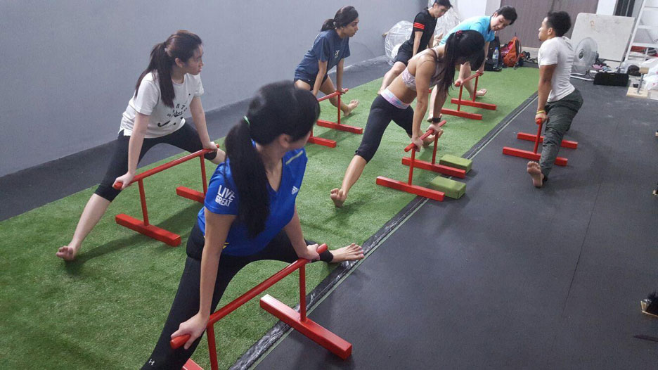

| Home | Contact | Classes | Fees |
|---|
|  |  |
|---|---|
Pull UpsNot sure how to do a proper push-up, dip, or squat? Or perhaps you just want an idea of what calisthenics is about? Join our introduction class to get familiar with the basic moves and get a glimpse of what it’s like to train with us. We’ll go in-depth with basic pushing, pulling and core exercises, focusing on the correct technique, form and muscle engagement to perform the moves safely. |
Core StrengthJump right into the workout in Calisthenics 1! We’ll walk you through push-ups and pull-ups with varying grips, knee/leg raises and even some basic cardio work – the result is an all-rounded workout that hits your arms, core and legs. This class is focused primarily on improving your foundation and building muscular strength. As such, props like resistance bands, blocks, parallettes, and boxes are used to stagger the difficulty level to meet your unique needs. |
|  |  |
HandstandsIt’s one thing to be able to get into a handstand, and another thing to be able to hold it! Our multi-level handstand class goes beyond building the necessary strength and flexibility – we also teach you the correct techniques to execute a solid handstand! There are exercises to strengthen your wrists, your arms, core and even legs, as well as to improve mobility of your hips and shoulders, all building, towards helping you not just get up, but also to stay up and safely balance on your hands. |
MobilitySuffering from stiff joints and frequent backaches? Painkillers not looking like a long term solution for you? Join the mobility classes to learn unique ways to stretch and mobilize stiff joints you probably didn't even know you had! A better posture leads to a better outlook of life. Join us and start stretching today! |